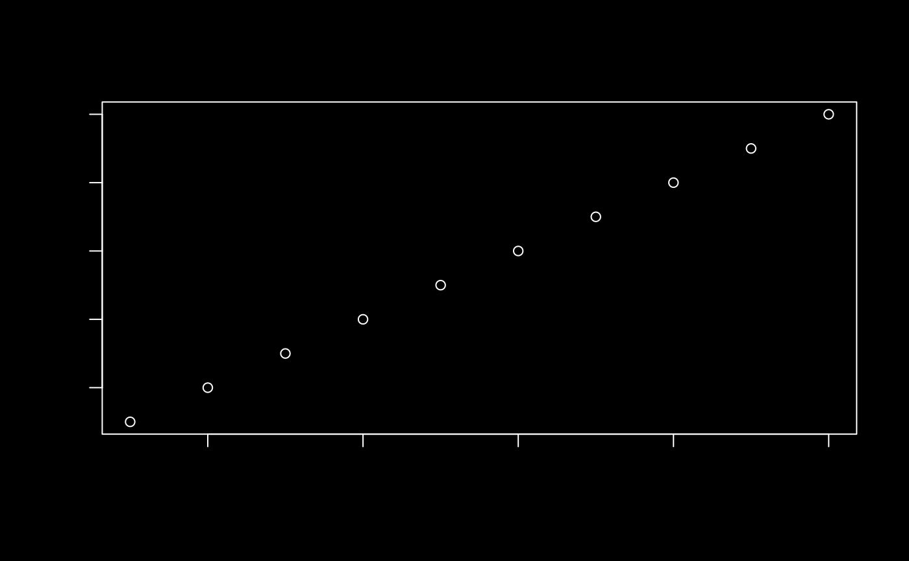

Uses a device to capture the result of an expression (expr)
that produces a plot. If default_device() is used, custom fonts
(specified through font_spec()) are guaranteed to work, as long as
one of either the showtext or ragg package(s) are installed.
thematic_with_device( expr, device = default_device(), filename = tempfile(fileext = ".png"), ... ) default_device(type = c("png", "tiff", "svg", "pdf"))
| expr | an expression that produces a plot. |
|---|---|
| device | a graphics device to use for capturing the plot. |
| filename | a filename for the produced plot. The file extension should
match the relevant |
| ... | arguments passed along to the graphics |
| type | the type of output format |
library(thematic) font <- font_spec("Rock Salt", scale = 1.25) thematic_on("black", "white", font = font) file <- thematic_with_device(plot(1:10), res = 144)#> Warning: thematic was unable to resolve `accent='auto'`. Try providing an actual color (or `NA`) to the `accent` argument of `thematic_on()`. By the way, 'auto' is only officially supported in `shiny::renderPlot()`, some rmarkdown scenarios (specifically, `html_document()` with `theme!=NULL`), in RStudio, or if `auto_preferences_set()` is set.